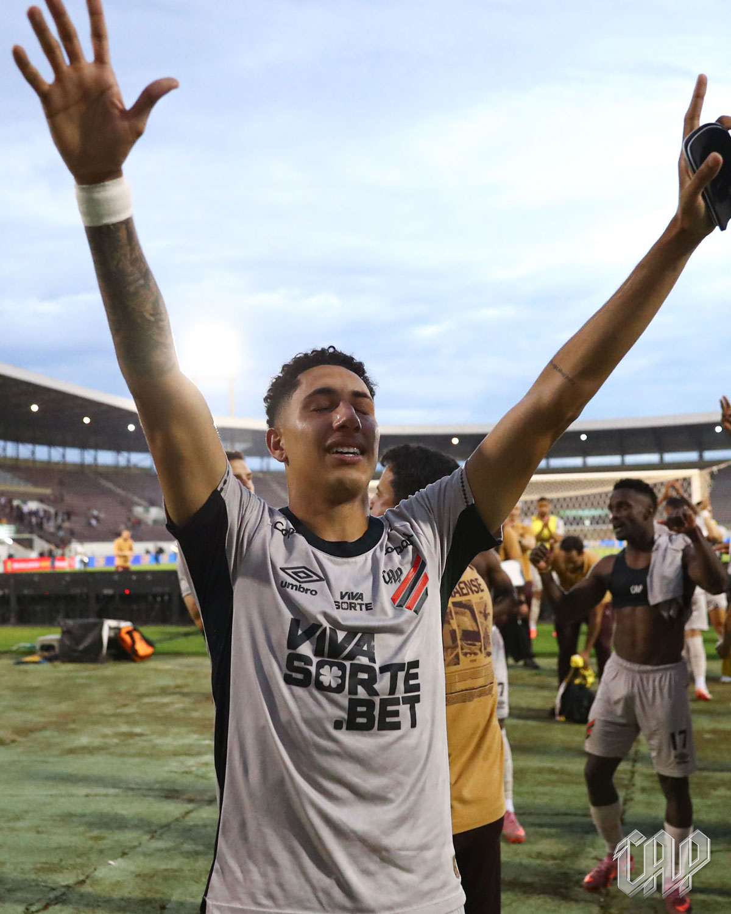
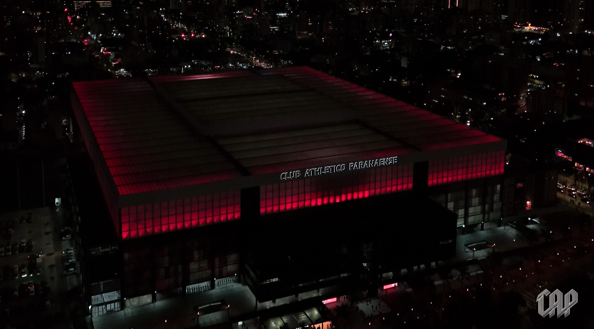
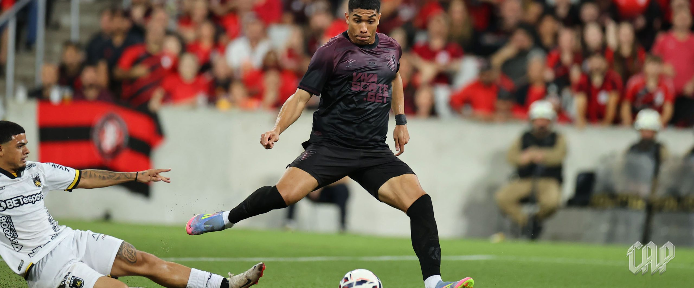
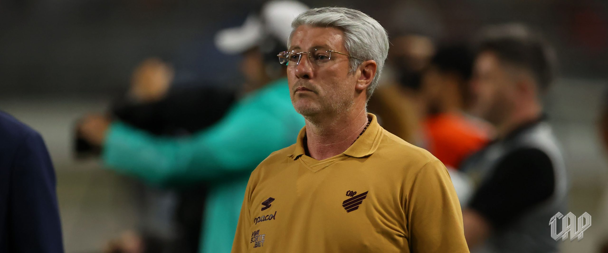
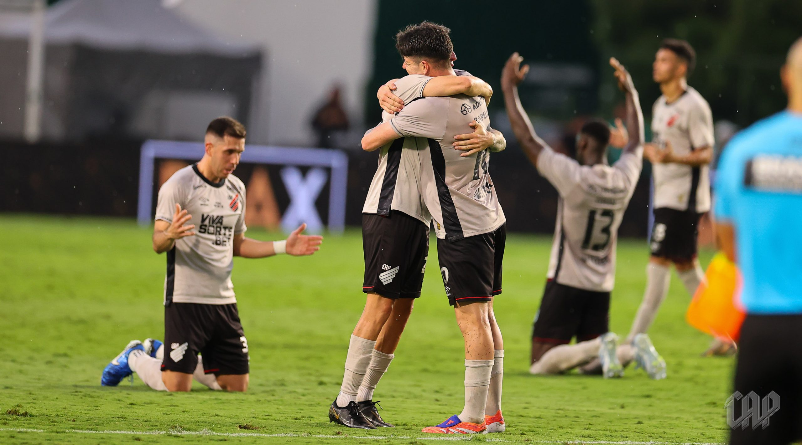

.svg) Últimas Notícias
Últimas Notícias

Últimas Notícias do Furacão
Athletico vira sobre a Ferroviária nos acréscimos e fica muito perto do acesso!
O Furacão venceu a Ferroviária por 2x1 fora de casa, com um gol aos 49 minutos do segundo tempo! Veja como foi a partida, os gols da virada e os bastidores dessa noite histórica em Araraquara.
A Ferroviária saiu na frente ainda no primeiro tempo, aproveitando de uma falha do goleiro rubro negro para abrir o placar. Mas o Athletico não se abalou e voltou com tudo para o segundo tempo.
O empate veio com um golaço de falta de João Cruz, que mandou direto pro gol e deixou a torcida rubro-negra em êxtase na Fonte Luminosa.
Nos acréscimos, aos 49 minutos, veio o momento histórico: Renan Peixoto subiu mais alto que a defesa após cruzamento preciso de Leozinho e marcou o gol da virada.
A vitória coloca o Athletico ainda mais próximo do retorno à Série A e reforça o ótimo momento da equipe comandada por Odair Hellmann.
Torcida do Athletico promete "invadir" Araraquara em jogo que pode valer acesso na Série B

Furacão atua nos bastidores e consegue aumentar carga de ingressos para duelo decisivo contra a Ferroviária, no domingo
A torcida do Athletico está se mobilizando para "invadir" Araraquara no jogo que pode valer o acesso na Série B do Brasileiro, contra a Ferroviária, na Arena Fonte Luminosa, no domingo, às 16h30, pela 37ª rodada, a penúltima da Segunda Divisão nacional.
Conforme apurou o ge, o clube do interior de São Paulo havia disponibilizado mil ingressos para o setor visitante inicialmente. No entanto, com a alta demanda dos athleticanos, a diretoria rubro-negra solicitou aumento da carga, que foi reajustada para 1.850 lugares.
O Athletico firmou uma parceria de incentivo à caravana da torcida Os Fanáticos, principal organizada rubro-negra, com a ideia de contar com o apoio do máximo de torcedores possível na partida fora de casa.
Araraquara fica distante cerca de 660km de Curitiba, em um trajeto aproximado de 8h50 via estrada. O Furacão, inclusive, volta à Fonte Luminosa após mais de 40 anos. A última e única vez foi pelo Campeonato Brasileiro de 1983, no empate em 0 a 0 com o time da casa.
Athletico é absolvido no STJD por invasão de campo e segue com torcida na reta final da Série B
Clube recebe multa de R$ 20 mil por arremesso de objetos, mas evita perda de mando após identificar torcedor invasor e adotar medidas internas
O Athletico respirou aliviado após o julgamento desta segunda-feira na 1ª Comissão Disciplinar do STJD. O clube foi absolvido da acusação de invasão de campo no jogo contra o Corinthians, pelas quartas de final da Copa do Brasil, e não sofrerá perda de mando na Série B. A decisão garante que o Furacão poderá atuar com apoio da torcida na última rodada da competição.
Apesar da absolvição no ponto mais sensível do processo, o Athletico recebeu multa de R$ 20 mil devido ao arremesso de objetos no gramado durante a mesma partida. A Comissão considerou que o clube tomou providências imediatas após o episódio da invasão, já que o torcedor responsável foi interceptado, identificado e autuado ainda no estádio. Além disso, a torcida organizada Os Fanáticos foi impedida de entrar com materiais por três jogos, medida que contou positivamente na análise do tribunal.
O caso aconteceu nos acréscimos do confronto, quando o Corinthians vencia por 1 a 0. O invasor deixou o setor rubro-negro, entrou no gramado e empurrou o goleiro Hugo Souza, sendo rapidamente contido pela segurança. Dias depois, apresentou-se à Polícia Civil para assinar termo circunstanciado e afirmou publicamente estar arrependido.
Athletico vence o Volta Redonda por 2x0 e segue embalado para o acesso a Série A!
O Athletico venceu o Volta Redonda por 2x0, com atuação dominante do Rubro Negro durante o jogo todo. Confira os gols, os melhores momentos e os bastidores dessa grande vitória!
O Athletico Paranaense mostrou força em casa e venceu o Volta Redonda por 2x0, com gols de Julimar e Leozinho. A equipe controlou o jogo desde o início, dominando as ações ofensivas e mantendo o apoio constante da torcida na Arena da Baixada.
O técnico Odair Hellmann destacou o comprometimento do elenco e comemorou a evolução tática apresentada nas últimas rodadas. Com esse resultado, o Furacão sobe na tabela e segue firme na busca pelo acesso.
Odair Hellmann ganha força e deve seguir no comando do Athletico em 2026
Clube vê evolução mental e de gestão no trabalho do treinador e planeja continuidade, independentemente da divisão
O Athletico Paranaense caminha para manter Odair Hellmann no comando técnico em 2026. A informação, apurada pela Trétis, aponta que o treinador ganhou moral nos bastidores e é visto internamente como o nome ideal para seguir liderando o projeto do clube, esteja o time na Série A ou na Série B.
O contrato de Odair vai até maio de 2025, mas a diretoria já discute uma renovação antecipada, algo que também agrada ao próprio técnico. Em entrevista recente, ele afirmou que “renovaria por mais dois anos”, demonstrando o desejo de permanecer em Curitiba.
Fontes internas do Athletico destacam que o trabalho de Odair foi essencial na gestão de crise e na recuperação emocional do elenco durante a temporada. O clube entende que o técnico conseguiu reorganizar o ambiente, melhorar o clima com o grupo e aproximar-se da torcida, com uma comunicação direta e transparente.
Odair Hellmann convoca torcida para lotar Arena e empurrar Athletico rumo ao acesso
Técnico exalta paixão da torcida e reforça que cada jogo é decisivo para garantir a volta à Série A
Após a vitória do Athletico em cima do Goiás no último sábado, na Serrinha, Odair Hellmann protagonizou um pronunciamento carregado de emoção, reafirmando a necessidade de união entre time e torcida para os próximos desafios da Série B. O treinador não poupou energia ao falar sobre o papel do torcedor na reta final da competição e reforçou a importância do apoio incondicional em momentos decisivos.
Odair exaltou a dedicação dos torcedores, agradeceu a presença nos jogos e enfatizou que agora é hora de empurrar o time para o acesso: “Agora, torcedor, é momento daquela união que falei lá atrás. Precisamos colocar 50 mil pessoas dentro da Arena e 10 mil pessoas na rua. Precisamos levar o ônibus até o vestiário, gritar o nome do jogador, apoiar os caras e empurrar a bola para dentro. Não é uma questão de pacto, é de paixão e amor ao clube”.